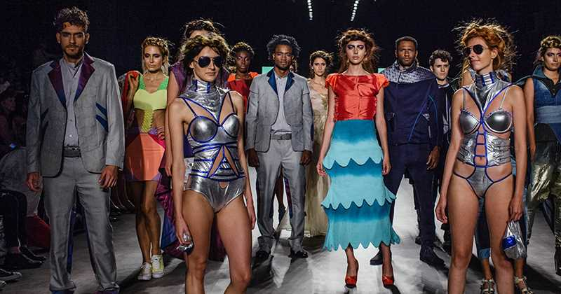

La Moda en Colombia empiezan a verse las nuevas tendencias que regirán la moda de los colombianos. Para la temporada primavera-verano, que empieza desde febrero, las tendencias llegan inspiradas en diferentes momentos de la cultura estadounidense y la ancestral prehispánica.
Diners habló con Mayte Cantero, directora de investigación del laboratorio de moda de Inexmoda, el instituto colombiano encargado de importantes ferias de moda como Colombiamoda, Colombiatex y BCapital, quien habló sobre las tendencias para tener en cuenta en esta temporada.
El proceso de selección de tendencias suele ser arduo, pues algunos factores, como la cultura y la falta de estaciones del país se deben tener en cuenta.
“En la cultura colombiana, por ejemplo, el pantalón bota campana se demoró mucho en emerger, pero el auge ha sido tal, que se ha ido transformando.
Solo en Colombia, las ventas de prendas de vestir y de calzado sumaron 8 mil millones de dólares en 2019; más de 1.200 empresas colombianas realizaron exportaciones a más de 100 países en el mundo y la industria de la moda contribuyó con el 9,6% al PIB nacional, según cifras oficiales.
A continuación vamos a ver unas clases de moda que se encuentran es nuestro país:
Página anterior (Colombia)